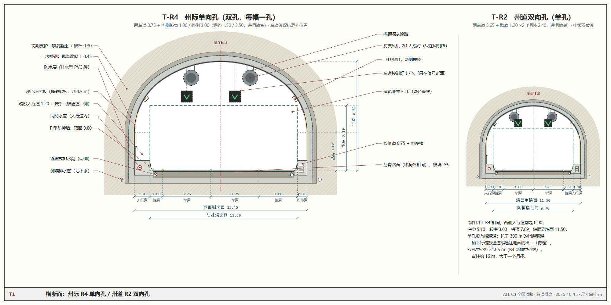
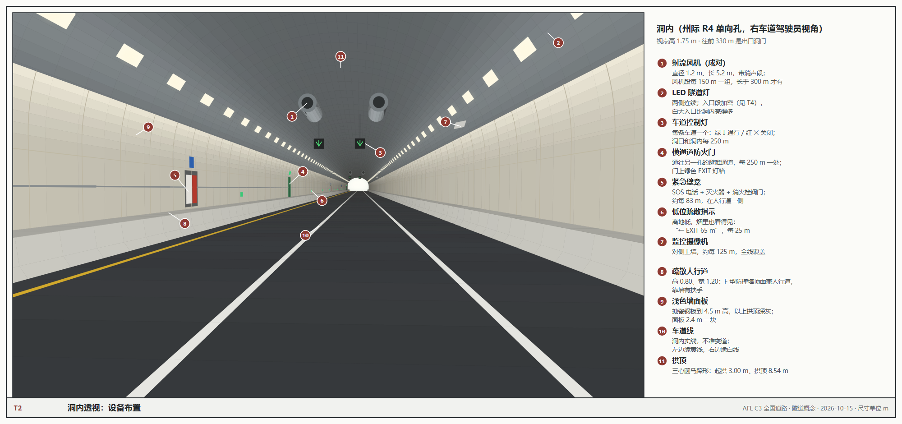
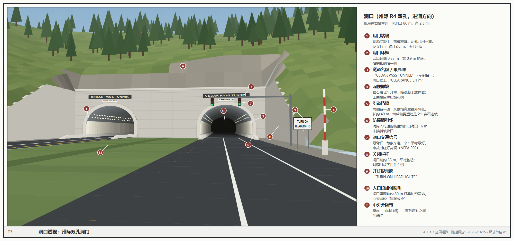
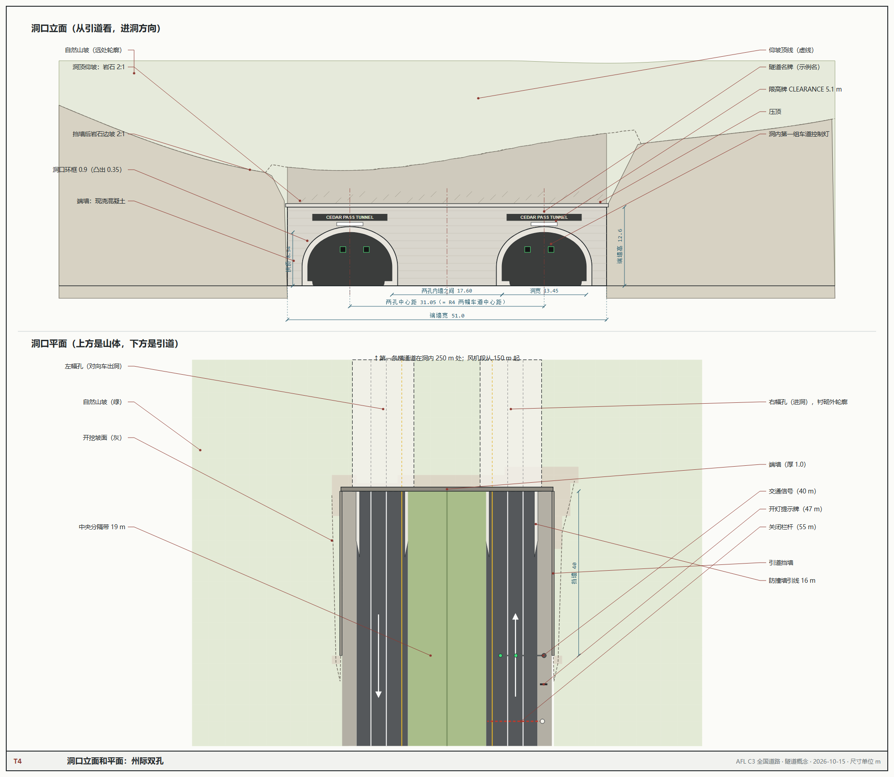
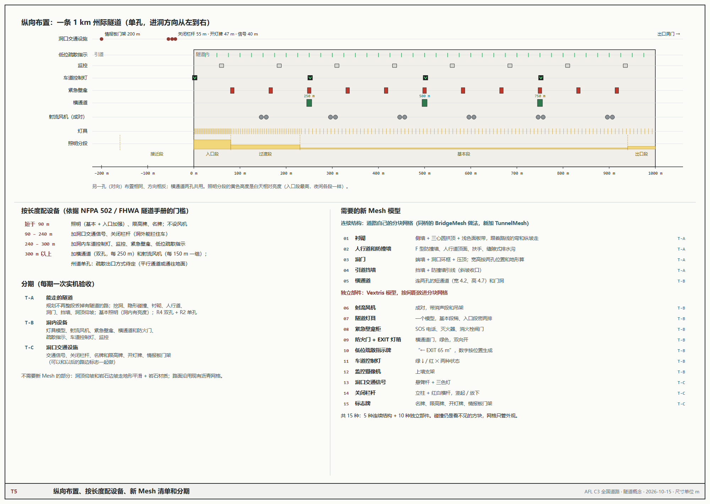

C3 全国道路 · 隧道概念（第 1 轮）
2026-10-15 · 概念，未实现 · 说明见 docs/worldgen/federal_tunnels_v1.md · 重新出图：在 source 目录里 node gen.mjs ../sheets，再 sh render.sh ../sheets
T1
横断面：州际 R4 单向孔 / 州道 R2 双向孔

T2
洞内透视：设备布置

T3
洞口透视：州际双孔洞门

T4
洞口立面和平面

T5
纵向布置、按长度配设备、新 Mesh 清单和分期
